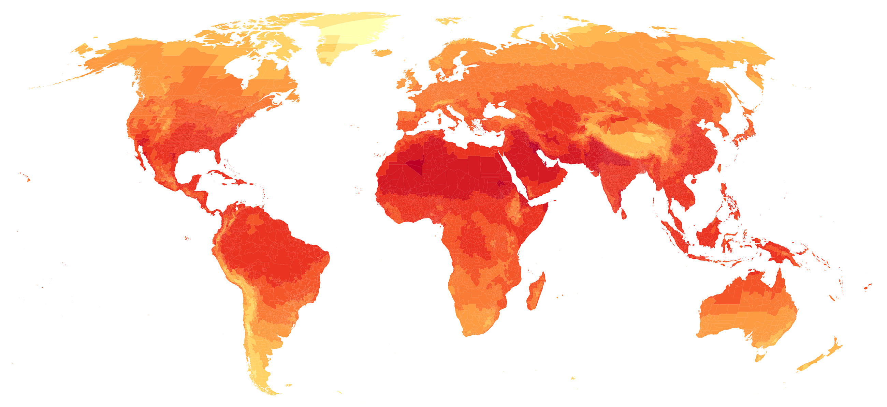
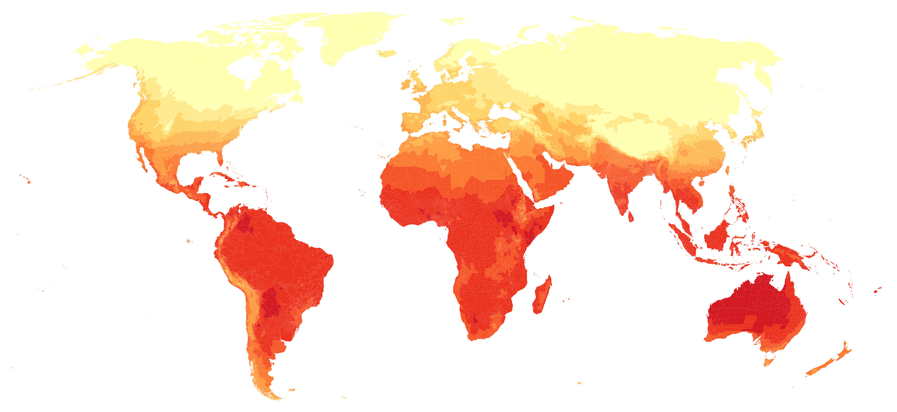
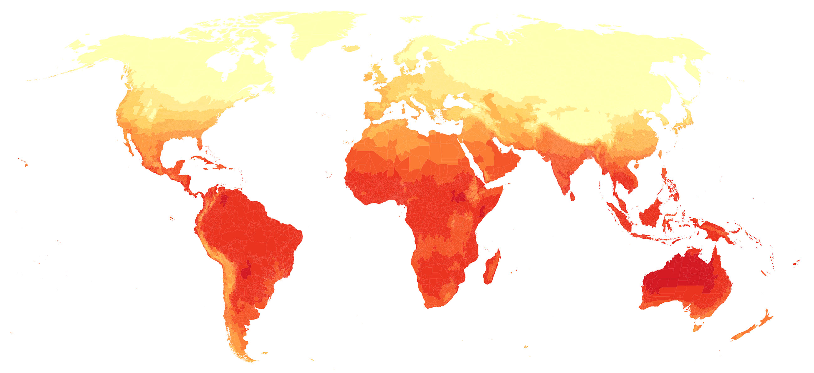
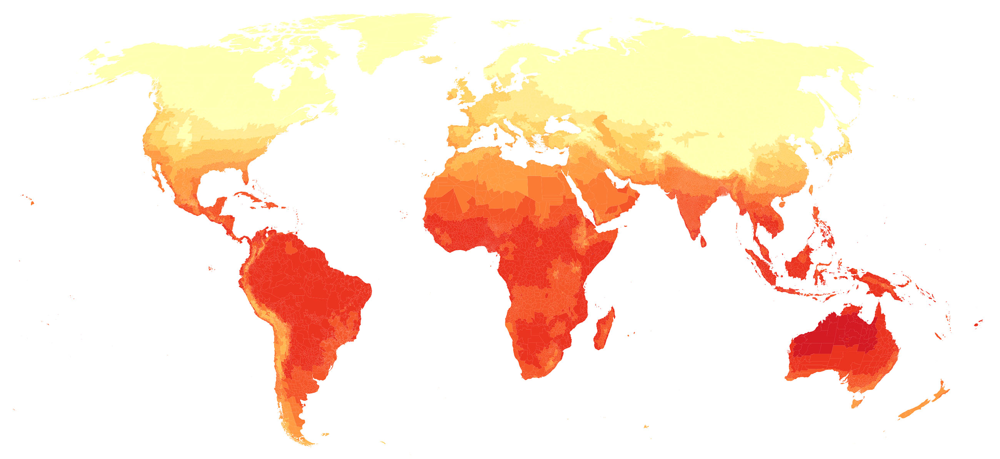

<div class="world-map"></div>
<div class="gv-city-search"></div>
<div class="gv-main" id="gv-main">{{{Copy1}}}
<div class="impact-container">
  <h2 class="impact-title title-summer">Northern Hemisphere summer averages 1986 - 2005</h2>
  <picture class="impact impact-3">
    <source media="(max-width: 740px)" srcset="../assets/summer_3_mobile.jpg">
    <source media="(min-width: 740px)" srcset="../assets/summer_3.jpg">  
    
  </picture>
  <picture class="impact impact-2">
    <source media="(max-width: 740px)" srcset="../assets/summer_2_mobile.jpg">
    <source media="(min-width: 740px)" srcset="../assets/summer_2.jpg">  
    
  </picture>
  <picture class="impact impact-1">
    <source media="(max-width: 740px)" srcset="../assets/summer_1_mobile.jpg">
    <source media="(min-width: 740px)" srcset="../assets/summer_1.jpg">  
    
  </picture>
</div>
<div class="impact-key-container">
  <div class="impact-key-labels">
    <div class="impact-key-label">-5</div>
    <div class="impact-key-label">0</div>
    <div class="impact-key-label">5</div>
    <div class="impact-key-label">10</div>
    <div class="impact-key-label">15</div>
    <div class="impact-key-label">20</div>
    <div class="impact-key-label">25</div>
    <div class="impact-key-label">30</div>
    <div class="impact-key-label">35</div>
  </div>
  <div class="impact-key">
    <div class="impact-key-item key-1"></div>
    <div class="impact-key-item key-2"></div>
    <div class="impact-key-item key-3"></div>
    <div class="impact-key-item key-4"></div>
    <div class="impact-key-item key-5"></div>
    <div class="impact-key-item key-6"></div>
    <div class="impact-key-item key-7"></div>
    <div class="impact-key-item key-8"></div>
    <div class="impact-key-item key-9"></div>
    <div class="impact-key-item key-10"></div>
  </div>
</div>
<div class="impact-container">
  <h2 class="impact-title title-winter">Southern Hemisphere summer averages 1986 - 2005</h2>
  <picture class="impact impact-3">
    <source media="(max-width: 740px)" srcset="../assets/winter_3_mobile.jpg">
    <source media="(min-width: 740px)" srcset="../assets/winter_3.jpg">  
    
  </picture>
  <picture class="impact impact-2">
    <source media="(max-width: 740px)" srcset="../assets/winter_2_mobile.jpg">
    <source media="(min-width: 740px)" srcset="../assets/winter_2.jpg">  
    
  </picture>
  <picture class="impact impact-1">
    <source media="(max-width: 740px)" srcset="../assets/winter_1_mobile.jpg">
    <source media="(min-width: 740px)" srcset="../assets/winter_1.jpg">  
    
  </picture>
</div>
        <div class="bri-series-outer">
                <a class="bri-series__link" href="https://www.theguardian.com/cities/series/sweltering-cities">
                <div class="bri-series">
                <div class="bri-series__inner">
                More from the
                <em>Sweltering Cities</em> series
                </div>
                <div class="bri-arr-outer">
                <svg class="bri-arr" xmlns="http://www.w3.org/2000/svg" width="28" height="28" viewBox="0 0 30 30">
                <path fill="currentColor" d="M22.82 14.63l-7.62-7.63-.72.7 5.5 6.57h-13.98v1.46h13.97l-5.5 6.56.73.7 7.62-7.63v-.74"></path>
                </svg>
                </div>
                </div> </a>
                </div>

</div>
